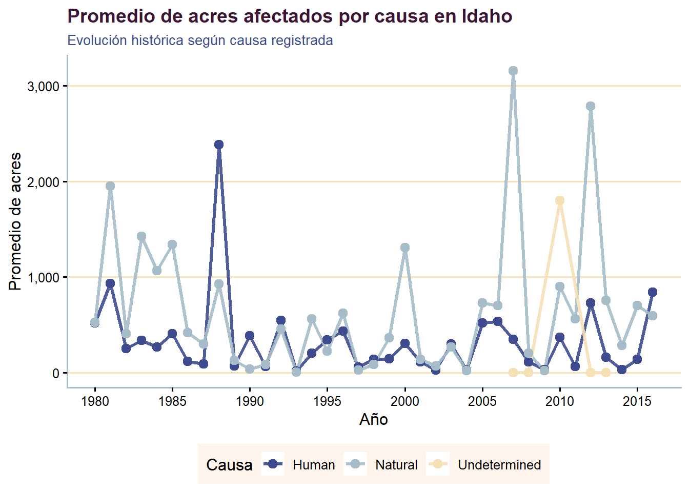

1 Incendios Forestales en Idaho
## Rows: 439362 Columns: 14
## ── Column specification ───────────────────────────────────────────────────────────────────────────────────
## Delimiter: ","
## chr (10): ORGANIZATI, UNIT, SUBUNIT, SUBUNIT2, FIRENAME, CAUSE, STARTDATED, CONTRDATED, OUTDATED, STATE
## dbl (4): FID, YEAR_, STATE_FIPS, TOTALACRES
##
## ℹ Use `spec()` to retrieve the full column specification for this data.
## ℹ Specify the column types or set `show_col_types = FALSE` to quiet this message.df <- datos %>%
filter(STATE == "Idaho", !is.na(CAUSE)) %>%
select(year = YEAR_, causa = CAUSE, total = TOTALACRES) %>%
group_by(causa, year) %>%
summarise(
media = mean(total, na.rm = TRUE),
mediana = median(total, na.rm = TRUE),
RIC = IQR(total, na.rm = TRUE),
.groups = "drop"
)1.1 Resumen Estadístico
df %>%
head(10) %>%
gt() %>%
tab_header(
title = md("**Resumen Estadístico de Hectáreas Afectadas**"),
subtitle = "Estado de Idaho por Causa y Año"
) %>%
cols_label(
causa = "Causa",
year = "Año",
media = "Media (Acres)",
mediana = "Mediana (Acres)",
RIC = "RIC"
) %>%
fmt_number(
columns = c(media, mediana, RIC),
decimals = 2
) %>%
tab_style(
style = cell_fill(color = "#FFF4EB"), # Seashell
locations = cells_body(rows = seq(1, 10, 2))
) %>%
tab_options(
table.width = pct(100),
column_labels.background.color = "#3E4B8E", # French Blue
column_labels.font.weight = "bold",
heading.title.font.size = px(18)
)| Resumen Estadístico de Hectáreas Afectadas | ||||
| Estado de Idaho por Causa y Año | ||||
| Causa | Año | Media (Acres) | Mediana (Acres) | RIC |
|---|---|---|---|---|
| Human | 1980 | 517.80 | 6.00 | 179.00 |
| Human | 1981 | 933.46 | 15.00 | 349.00 |
| Human | 1982 | 250.12 | 7.50 | 105.25 |
| Human | 1983 | 339.74 | 10.50 | 121.00 |
| Human | 1984 | 265.02 | 10.00 | 150.00 |
| Human | 1985 | 407.40 | 5.00 | 87.35 |
| Human | 1986 | 118.96 | 0.30 | 5.90 |
| Human | 1987 | 93.18 | 0.20 | 4.90 |
| Human | 1988 | 2,383.54 | 0.50 | 9.90 |
| Human | 1989 | 69.71 | 0.10 | 0.90 |
1.2 Evolución Temporal del Impacto
ggplot(df, aes(x = year, y = media, color = causa, group = causa)) +
geom_line(linewidth = 1.2, alpha = 0.9) +
geom_point(size = 2.8) +
scale_x_continuous(breaks = scales::pretty_breaks(n = 8)) +
scale_y_continuous(labels = scales::comma_format()) +
scale_color_manual(
values = unname(paleta_custom[c("French Blue", "Powder Blue", "Wheat", "Midnight Violet")]),
na.value = "#A6BCC9"
) +
labs(
title = "Promedio de acres afectados por causa en Idaho",
subtitle = "Evolución histórica según causa registrada",
x = "Año",
y = "Promedio de acres",
color = "Causa"
) +
theme_classic(base_size = 12) +
theme(
plot.title = element_text(face = "bold", size = 14, color = "#3D1534"),
plot.subtitle = element_text(size = 10, color = "#3E4B8E"),
legend.position = "bottom",
legend.background = element_rect(fill = "#FFF4EB", color = NA),
axis.line = element_line(color = "#A6BCC9"),
panel.grid.major.y = element_line(color = "#F6E0B6")
)